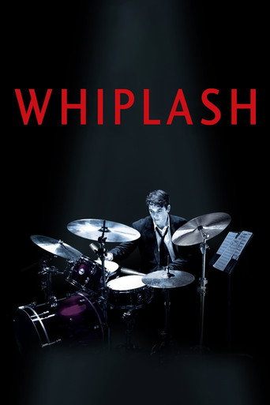
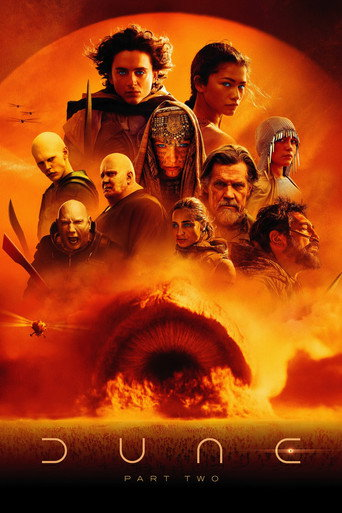

14½★ on Whiplash, we called it

2014 · 1h 47m · Damien Chazelle
We guessed 4½. Called it.
One tap teaches the next guess. Skip it and nothing changes.
The chips appear the moment a star is picked, right under the stars. Four from this film's own traits, subjects and strongest labels, then More for the general ones. Save is still the one cream button; it saves the rating with or without a chip.
22★ on Dune: Part Two, we guessed higher

2024 · 2h 46m · Denis Villeneuve
We guessed 4. You liked it less.
One tap teaches the next guess. Skip it and nothing changes.
Below our guess, or under 3★, it asks what didn't work. Above our guess it asks "What did we miss?" Nothing is picked here: the chips stay unpicked until tapped, and the question never blocks Save.
3Pitch with nothing to show
We read it as
1970s rules out the most. Without it, 14 films fit.
Or try
The chip that frees the most is outlined in the one red, and Drop 1970s takes it off in one tap, free, as its × does. The two asks are the nearest that do have films. Browse instead opens Browse with the same filters on.
4Search with nothing to show
Recent
ClearPopular this week
Says what was searched, in full. Did you mean shows only when a film or person is a few letters off. Pitch it instead opens Pitch with the words in the box, not run. Recent and popular fill the rest so the screen is never a dead end.